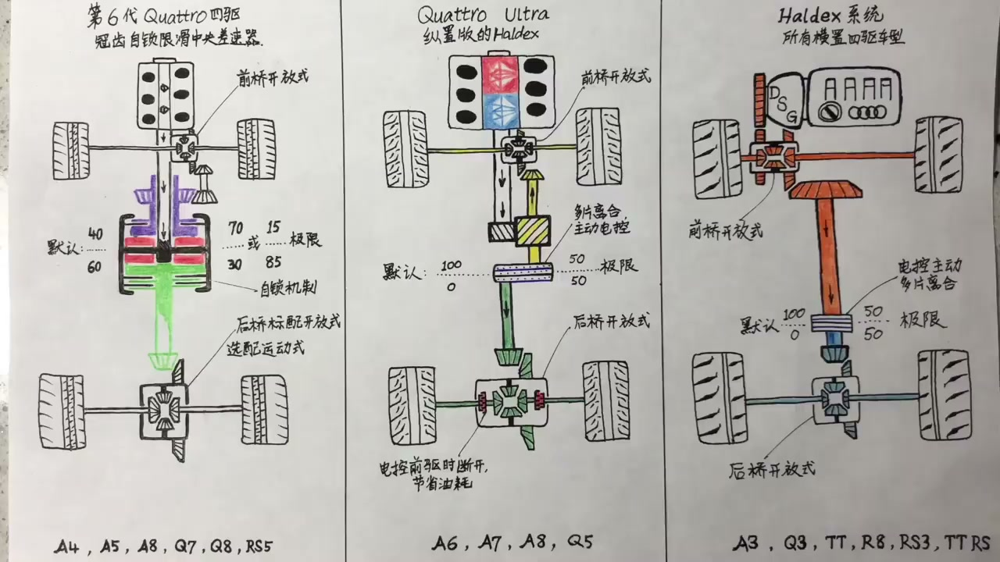
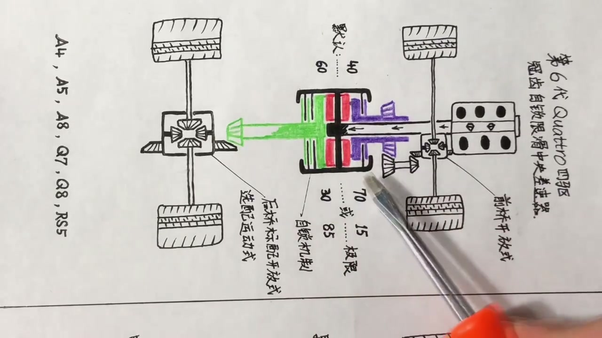
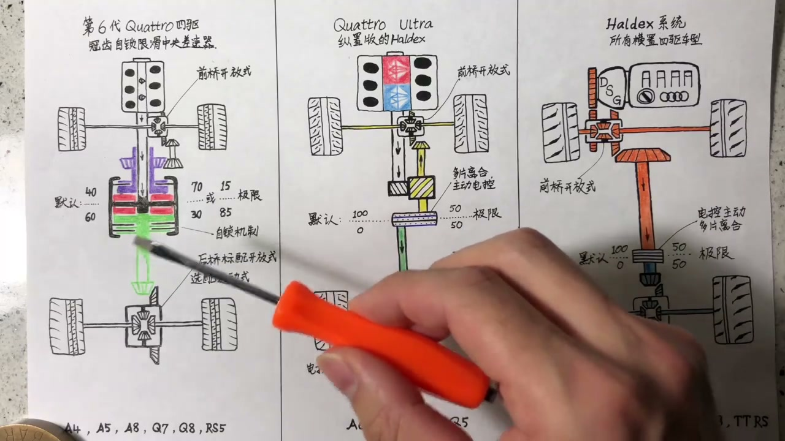

内容要点
这段视频围绕「奥迪Quattro四驱工作原理 【上集】」展开，按时间介绍其中的关键环节。Hello大家好。
开场引入
Hello大家好。我是小老虎。欢迎来到我的频道。那么今天我想来和大家聊一聊。奥迪的四驱系统。也就是鼎鼎有名的Quattro。其实Quattro是奥迪对它自家一个四驱的一个叫法。它也是一个商标。而不是说特定值某一种四驱形式。那么在现在这个奥迪不同的车型上

核心内容
传到这一块。那么这一整个黑色的。我描黑的这一块。其实就是它中央插速器的整个的外壳了。那么所有黑色的部分。它都是跟着一起转的。那么红色的部分。是四个固定在黑色柱子上的。四个小齿轮。它们的齿轮方向是这样的
操作演示
核心问题来了。如果说这一套四驱系统。核心在于中央插速器。那么中央插速器的核心。就在于红色的齿轮了。奥迪自家是没有能力生产的。这一套红色齿轮的几核形状。是非常特殊的。是奥迪请一个瑞士的一个公司。名字叫ASSAG

进阶技巧
往外一推。与整个中央插速器外壳箱连接的离合片。互相锁死。将动力更多的传到后轴。完成了前轮打滑。我将更多的动力传到有抓地力的后轴。这个目标。那么同样的道理。如果后桥开始打滑。后面两个轮子
总结收束
这以前以后的两个开放式插速器。还是蛮令人遗憾的。但是在一些运动的车型上。你可以选配。后面的插速器。你可以选配一个运动插速器。那么在这个所谓的运动插速器中。奥迪会多给你两组离合片。左边一片。右边一片

总结
这以前以后的两个开放式插速器。